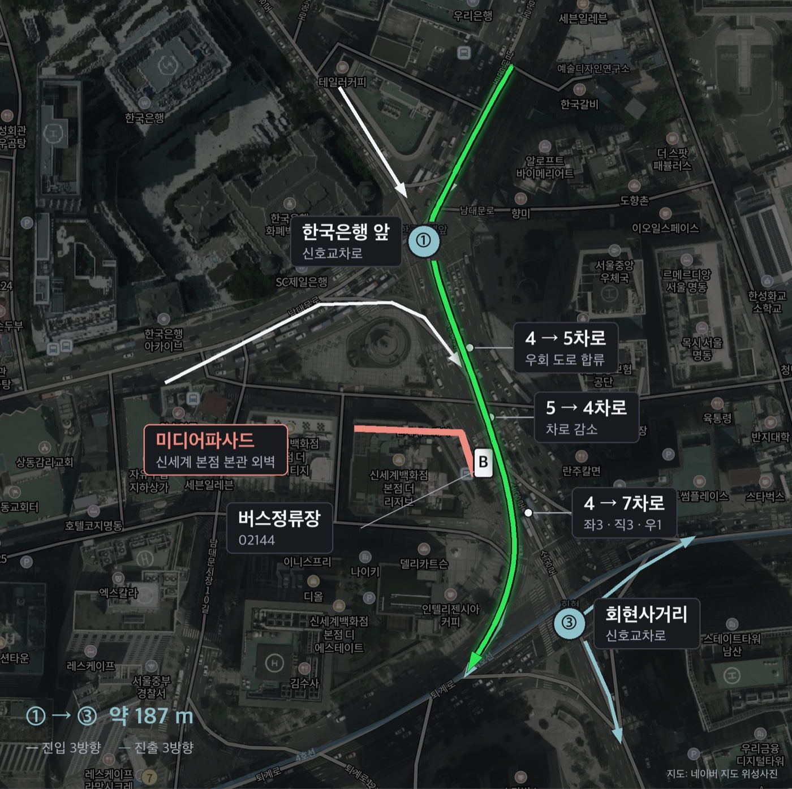
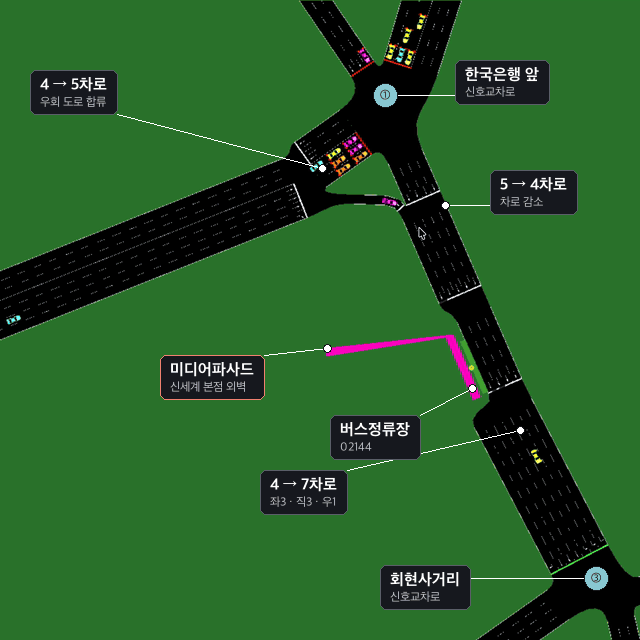
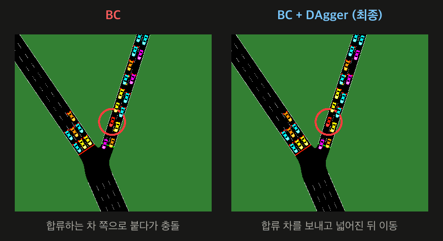
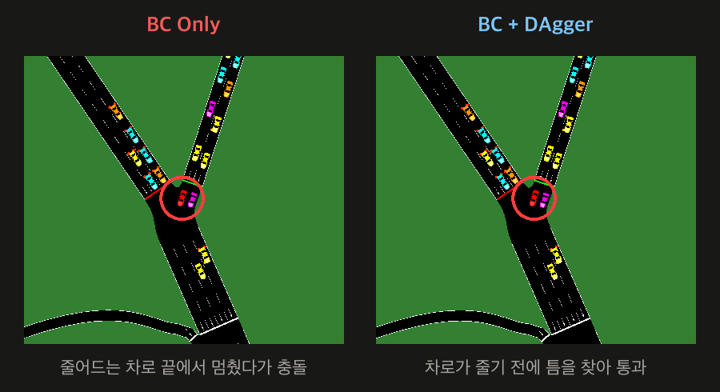
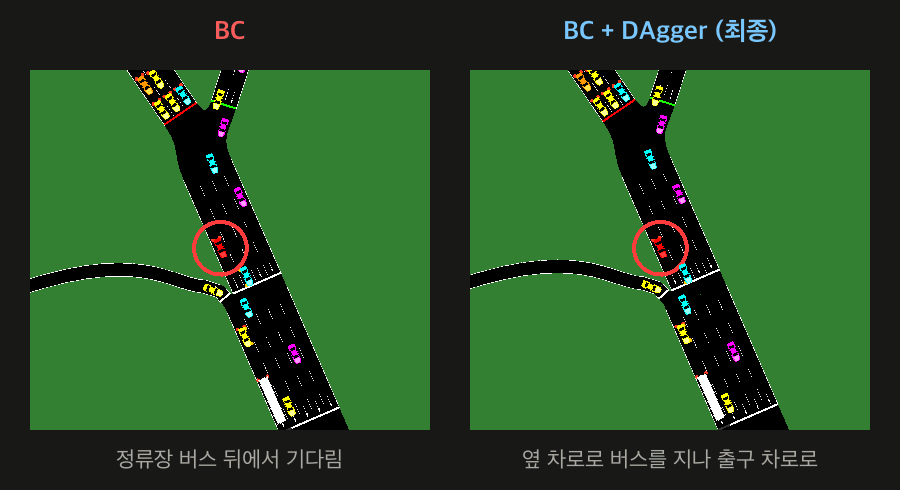
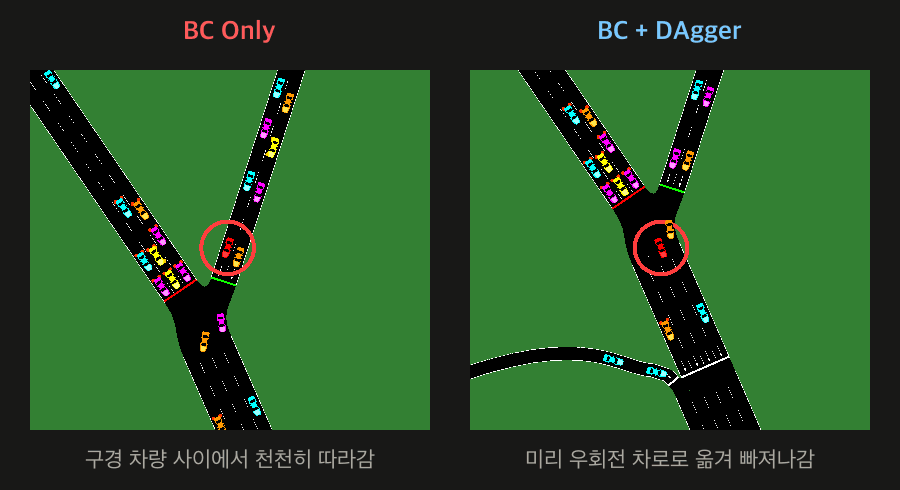
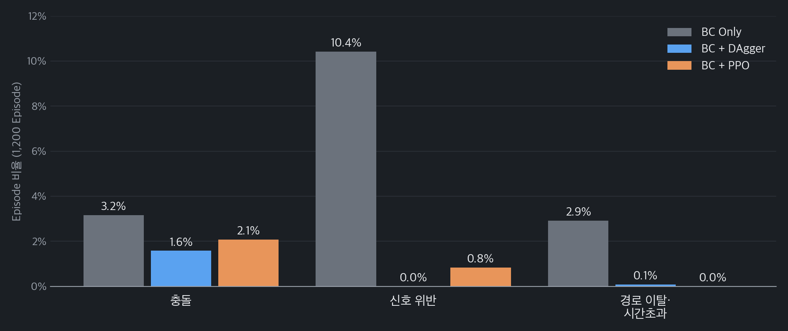
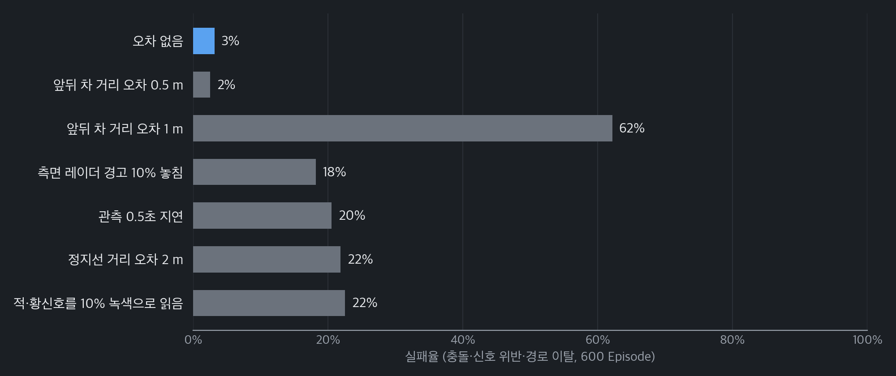

신호 위반과 경로 이탈이 세 모델 중 가장 많았습니다.
- 충돌
- 38건 (3.2%)
- 신호 위반
- 125건
- 경로 이탈
- 35건
- 시간초과
- 0건
- 실패 Episode
- 155회
- 복잡 구간 평균
- 21.48초
한국은행 앞에서 회현사거리까지 이어지는 명동 소공로를 교통 시뮬레이터 SUMO에 재현하고, 이 구간을 달리는 자율주행 모델을 학습시킨 뒤 주행 데이터를 수집했습니다. 크리스마스 시나리오에서는 미디어파사드를 보러 오는 차량이 늘고, 사진을 찍으려는 차량은 백화점 앞에서 속도를 늦춥니다. 자율주행차는 주변 차량의 흐름에 맞춰 속도를 조절하고, 정류장에 선 버스를 기다릴지 앞질러 갈지 판단해 우회전 차로에 진입해야 합니다.
모델은 먼저 Behavior Cloning(BC)로 규칙 기반 운전자의 주행을 모방했습니다. 이어서 DAgger를 적용해 모델이 직접 주행하며 마주친 상황에서 그 운전자가 어떤 행동을 선택할지 학습했습니다. 네 가지 교통 조건에서 총 1,200 Episode를 평가한 결과, 충돌률은 1.6%였고 신호 위반과 경로 이탈은 한 건도 없었습니다.

자율주행차는 한국은행 앞 맨 왼쪽 차로에서 출발해 약 187 m 앞 회현사거리에서 우회전하려면 맨 오른쪽 차로까지 이동해야 합니다. 그 차로에는 버스정류장이 있어, 버스가 서 있으면 뒤에서 기다릴지 옆 차로로 지나갈지 판단해야 합니다. 이 가운데 신호 직후 약 150 m는 차로 변경과 합류가 몰리는 복잡 구간으로, 이 구간을 통과하는 데 걸린 시간을 비교합니다.


서로 다른 출구를 향해 차들이 엇갈립니다. 어느 틈으로 우회전 차로에 들어갈까요?
우회 도로가 합류한 뒤 5차로가 4차로로 줄어듭니다. 합류 차량보다 먼저 들어갈까요, 양보할까요?
정차한 버스가 우회전 차로를 막습니다. 뒤에서 기다릴까요, 옆 차로로 지나갈까요?
교통량은 평시의 1.5배이고, 미디어파사드 앞에서 차들이 느려집니다. 앞차를 따라갈까요, 차로를 바꿀까요?
연말에는 신세계 본관 외벽 전체가 미디어파사드가 되고, 구경하느라 속도를 줄이는 차가 생깁니다. 이에 맞게 시뮬레이터에서 크리스마스 상황을 만들고 두 상황을 바꿔 가며 학습하고 평가했습니다.
Behavior Cloning(BC)은 운전 시연을 보고 배우는 방법입니다. 모델은 매 순간 주변 상황을 보고, 시연 속 운전자처럼 가감속과 차로 변경을 선택하는 법을 익힙니다.
주변 차량과 신호에 반응하는 규칙 기반 운전자가 평시와 크리스마스 상황에서 총 1,000 Episode를 주행하며 약 40만 개의 (observation, action) 쌍을 수집했습니다.
실제 운전자나 차량 센서가 알 수 있는 정보만 넣었습니다.
| 칸 | 내용 | 추가한 이유 |
|---|---|---|
| [0] ~ [30] | 속도, 주변 5개 차로의 앞뒤 차 거리·상대속도, 차로 연결성, 차로 밀도 | 주변 차량을 보는 기본 관측 |
| [31], [32] | 다음 신호 상태, 정지선까지 거리 | SUMO가 대신 서 주지 않으므로 신호를 봐야 함 |
| [33], [34] | 왼쪽·오른쪽 측면 레이더 | 기본 관측은 바로 옆 약 2.5 m 안의 차를 "없음"으로 봄 |
| [35], [36] | 다음 회전 방향, 회전 지점까지 거리 (내비게이션) | 지도 수준 경로 안내 |
| [37] | 80 m 앞 정류장에 버스 정차 중 (카메라) | 앞에 선 차가 20초 서는 버스인지 구분 |
| 항목 | 값 |
|---|---|
| Optimizer | Adam |
| Epochs | 30 |
| Learning rate | 0.0003 |
| Batch size | 256 |
| Discount factor | 0.99 |
| Training seed | 0 |
| Lane-change weight | 전체 행동의 0.66%인 차로 변경에 더 큰 가중치 적용 |
차가 정지선 앞에서 조금만 더 가속해도 다음 순간의 위치와 속도는 시연과 달라집니다. BC로 학습한 모델을 baseline으로 삼아, DAgger는 시연에서 벗어난 상황에서도 어떤 행동을 선택해야 하는지 전문가에게 다시 배웁니다.
모델이 직접 주행하며 마주친 상황마다 규칙 기반 운전자의 정답 행동을 기록하고, 그 관측과 행동 쌍을 기존 시연 데이터에 더합니다.
BC와 같은 신경망이 38개 관측값을 받아 가감속과 차로 선택을 예측합니다. 매 라운드에 모은 사례까지 포함해 전문가의 행동을 다시 학습합니다.
학습 때 보지 못한 상태(Out-of-Distribution, OOD)에 대응하는 두 방법을 비교했습니다. BC Only를 baseline으로 두고, 전문가의 행동을 추가로 배우는 DAgger와 주행 보상으로 정책을 fine-tuning하는 PPO를 평가했습니다. 검증 주행에서 실패한 횟수가 가장 적었던 BC + DAgger를 최종 모델로 채택했습니다.
신호 위반과 경로 이탈이 세 모델 중 가장 많았습니다.
신호 위반, 경로 이탈이 없고 충돌률도 가장 낮습니다. 세 모델 중 가장 안정적으로 주행합니다.
신호 위반, 충돌이 DAgger에 비해 많고, 복잡 구간 통과 시간도 평균 22.71초로 세 모델 중 가장 길었습니다.
매 라운드 모델이 직접 400회 주행하고(β = 0), 규칙 기반 운전자가 각 관측에 정답 행동을 붙였습니다. 세 라운드 모두 기존 시연과 새로 모은 데이터를 합쳐 처음부터 다시 학습했습니다.
| 항목 | 값 |
|---|---|
| Initialization · Training steps | BC 가중치에서 시작해 400,000스텝 fine-tuning |
| Traffic | 평시와 크리스마스 혼합, 버스 3배 |
| Learning rate | 0.00005 |
| Rollout length | 2,048스텝 |
| Update epochs · Minibatch size | 10 · 64 |
| Discount factor γ · GAE λ | 0.99 · 0.95 |
| Clip range ε | 0.2 |
| Value function V(s) · Critic | |
| Value loss coefficient | 0.5 |
| Entropy coefficient (전체 · 차로 선택) | 0 · 0.01 |
| Max gradient norm | 0.5 |
| Initial log σ (가감속) | −1.5 |
| BC regularization coefficient | 0.1 (규칙 기반 운전자 시연 사용) |
| Critic warmup | 처음 5회는 가치 출력층만 업데이트 |
| Red-light violation handling | 학습 중에는 즉시 종료하고, 평가 중에는 계속 주행하며 위반을 집계 |

신호를 지나 얼마 안 가 우회 도로 차들이 오른쪽에서 합류합니다. 두 모델은 같은 시점에 신호를 통과했습니다. BC Only는 합류 지점 전에 맨 오른쪽 차로까지 옮겼다가 합류하는 차와 충돌했습니다. BC + DAgger는 한 차로만 먼저 옮기고, 합류 지점을 지나 차로가 넓어진 뒤 다시 오른쪽으로 이동해 복잡 구간을 14.5초 만에 통과했습니다.

합류 지점을 지나면 오른쪽 두 차로가 하나로 합쳐집니다. 두 모델 모두 줄어드는 차로로 들어왔지만, BC Only는 차로 끝에서 끼어들지 못하고 약 20초를 서 있다가 충돌했습니다. BC + DAgger는 차로가 줄어들기 전에 틈을 찾아 들어가 복잡 구간을 14.5초 만에 통과했습니다.

우회전 차로에 정류장이 있어서, 버스가 서 있으면 뒤에서 기다리거나 옆 차로로 지나가야 합니다. BC Only는 버스 뒤에서 기다려 복잡 구간에 41.0초가 걸렸습니다. BC + DAgger는 한 칸 왼쪽 차로로 버스를 지나간 뒤, 회현사거리 앞 넓어진 곳에서 우회전 차로로 돌아가 31.5초가 걸렸습니다.

크리스마스에는 일반 차량의 30%가 미디어파사드 앞을 11 km/h로 지나갑니다. BC Only는 가운데 차로에서 구경하는 차들을 따라가 복잡 구간에 40.0초가 걸렸고, BC + DAgger는 미리 우회전 차로로 옮겨 15.0초 만에 빠져나갔습니다.
| 조건 | 충돌 | 신호 위반 | 경로 이탈 | 복잡 구간 |
|---|---|---|---|---|
| 평시 | 0 / 300 | 0 | 0 | 14.9초 |
| 크리스마스 | 2 / 300 | 0 | 0 | 21.9초 |
| 크리스마스 + 교통량 1.3배 (학습에 안 쓴 조건) | 5 / 300 | 0 | 0 | 25.4초 |
| 크리스마스 + 버스 3배 | 12 / 300 | 0 | 0 | 22.7초 |

모델이 실제로 본 관측과 함께, 정책 입력에는 쓰지 않는 시뮬레이터 내부 상태도 같이 남겨 belief·representation 학습에 쓸 수 있게 했습니다.
| 키 | 자료형 | 내용 |
|---|---|---|
observation | float[38] | 모델이 본 관측 38개 (03 · 학습의 관측값 표) |
action_raw, action.* | float[2], dict | 가감속과 차로 변경 출력, 실제로 적용된 차로 변경 (−1, 0, +1) |
reward, terminated, truncated | float, bool | 보상과 Episode 종료 여부 |
state | dict | SUMO 내부 상태 |
detected_vehicles | list[dict] | 관측과 같은 시점에 감지한 주변 차량 좌표 |
event.* | dict | 충돌, 도착, 경로 이탈, 신호 위반, Teleport, 차로 변경 전후를 따로 기록 |
next_observation, next_state | float[38], dict | 다음 스텝의 관측과 상태 |
실제 차량의 센서 관측에는 오차가 있습니다. 오차 없는 관측으로 학습한 BC + DAgger에 관측 오차를 넣어 평가하니, 앞뒤 차 거리 오차 1 m나 0.5초 지연처럼 작은 오차에도 실패율이 크게 올라갔습니다. 실제 차에 쓰려면 오차를 섞은 관측으로 학습해야 합니다.
